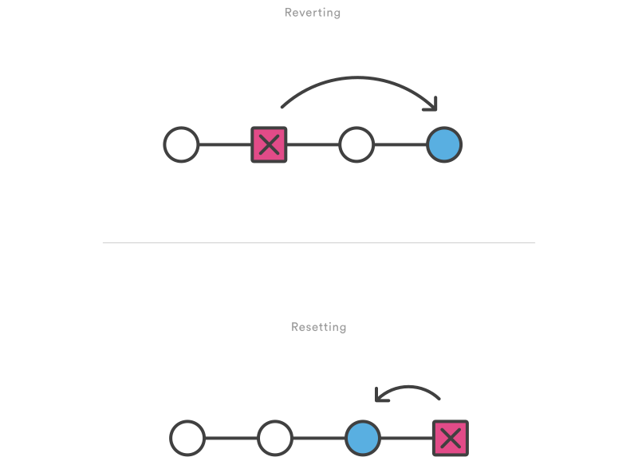

Undoing Changes¶
This tutorial provides all of the necessary skills to work with previous revisions of a software project. First, it shows you how to explore old commits, then it explains the difference between reverting public commits in the project history vs. resetting unpublished changes on your local machine.
git checkout¶
The git checkout command serves three distinct functions: checking out files, checking out commits, and checking out branches. In this module, we’re only concerned with the first two configurations.
Checking out a commit makes the entire working directory match that commit. This can be used to view an old state of your project without altering your current state in any way. Checking out a file lets you see an old version of that particular file, leaving the rest of your working directory untouched.
Usage¶
git checkout master
Return to the master branch. Branches are covered in depth in the next module, but for now, you can just think of this as a way to get back to the “current” state of the project.
git checkout <commit> <file>
Check out a previous version of a file. This turns the <file> that resides in the working directory into an exact copy of the one from <commit> and adds it to the staging area.
git checkout <commit>
Update all files in the working directory to match the specified commit. You can use either a commit hash or a tag as the <commit> argument. This will put you in a detached HEAD state.
Discussion¶
The whole idea behind any version control system is to store “safe” copies of a project so that you never have to worry about irreparably breaking your code base. Once you’ve built up a project history, git checkout is an easy way to “load” any of these saved snapshots onto your development machine.
Checking out an old commit is a read-only operation. It’s impossible to harm your repository while viewing an old revision. The “current” state of your project remains untouched in the master branch (see the Branches Module for details). During the normal course of development, the HEAD usually points to master or some other local branch, but when you check out a previous commit, HEAD no longer points to a branch—it points directly to a commit. This is called a “detached HEAD” state, and it can be visualized as the following:
On the other hand, checking out an old file does affect the current state of your repository. You can re-commit the old version in a new snapshot as you would any other file. So, in effect, this usage of git checkout serves as a way to revert back to an old version of an individual file.

Example¶
Viewing an Old Revision¶
This example assumes that you’ve started developing a crazy experiment, but you’re not sure if you want to keep it or not. To help you decide, you want to take a look at the state of the project before you started your experiment. First, you’ll need to find the ID of the revision you want to see.
git log --oneline
Let’s say your project history looks something like the following:
b7119f2 Continue doing crazy things
872fa7e Try something crazy
a1e8fb5 Make some important changes to hello.py
435b61d Create hello.py
9773e52 Initial import
You can use git checkout to view the “Make some import changes to hello.py” commit as follows:
git checkout a1e8fb5
This makes your working directory match the exact state of the a1e8fb5 commit. You can look at files, compile the project, run tests, and even edit files without worrying about losing the current state of the project. Nothing you do in here will be saved in your repository. To continue developing, you need to get back to the “current” state of your project:
git checkout master
This assumes that you're developing on the default master branch, which will be thoroughly discussed in the Branches Module.
Once you’re back in the master branch, you can use either git revert or git reset to undo any undesired changes.
Checking Out a File¶
If you’re only interested in a single file, you can also use git checkout to fetch an old version of it. For example, if you only wanted to see the hello.py file from the old commit, you could use the following command:
git checkout a1e8fb5 hello.py
Remember, unlike checking out a commit, this does affect the current state of your project. The old file revision will show up as a “Change to be committed,” giving you the opportunity to revert back to the previous version of the file. If you decide you don’t want to keep the old version, you can check out the most recent version with the following:
git checkout HEAD hello.py
git revert¶
The git revert command undoes a committed snapshot. But, instead of removing the commit from the project history, it figures out how to undo the changes introduced by the commit and appends a new commit with the resulting content. This prevents Git from losing history, which is important for the integrity of your revision history and for reliable collaboration.

Usage¶
git revert <commit>
Generate a new commit that undoes all of the changes introduced in <commit>, then apply it to the current branch.
Discussion¶
Reverting should be used when you want to remove an entire commit from your project history. This can be useful, for example, if you’re tracking down a bug and find that it was introduced by a single commit. Instead of manually going in, fixing it, and committing a new snapshot, you can use git revert to automatically do all of this for you.
Reverting vs. Resetting¶
It's important to understand that git revert undoes a single commit—it does not "revert" back to the previous state of a project by removing all subsequent commits. In Git, this is actually called a reset, not a revert.

Reverting has two important advantages over resetting. First, it doesn’t change the project history, which makes it a “safe” operation for commits that have already been published to a shared repository. For details about why altering shared history is dangerous, please see the git reset page.
Second, git revert is able to target an individual commit at an arbitrary point in the history, whereas git reset can only work backwards from the current commit. For example, if you wanted to undo an old commit with git reset, you would have to remove all of the commits that occurred after the target commit, remove it, then re-commit all of the subsequent commits. Needless to say, this is not an elegant undo solution.
Example¶
The following example is a simple demonstration of git revert. It commits a snapshot, then immediately undoes it with a revert.
# Edit some tracked files
# Commit a snapshot
git commit -m "Make some changes that will be undone"
# Revert the commit we just created
git revert HEAD
This can be visualized as the following:
Note that the 4th commit is still in the project history after the revert. Instead of deleting it, git revert added a new commit to undo its changes. As a result, the 3rd and 5th commits represent the exact same code base, and the 4th commit is still in our history just in case we want to go back to it down the road.
git reset¶
If git revert is a “safe” way to undo changes, you can think of git reset as the dangerous method. When you undo with git reset(and the commits are no longer referenced by any ref or the reflog), there is no way to retrieve the original copy—it is a permanent undo. Care must be taken when using this tool, as it’s one of the only Git commands that has the potential to lose your work.
Like git checkout, git reset is a versatile command with many configurations. It can be used to remove committed snapshots, although it’s more often used to undo changes in the staging area and the working directory. In either case, it should only be used to undo local changes—you should never reset snapshots that have been shared with other developers.
Usage¶
git reset <file>
Remove the specified file from the staging area, but leave the working directory unchanged. This unstages a file without overwriting any changes.
git reset
Reset the staging area to match the most recent commit, but leave the working directory unchanged. This unstages all files without overwriting any changes, giving you the opportunity to re-build the staged snapshot from scratch.
git reset --hard
Reset the staging area and the working directory to match the most recent commit. In addition to unstaging changes, the --hardflag tells Git to overwrite all changes in the working directory, too. Put another way: this obliterates all uncommitted changes, so make sure you really want to throw away your local developments before using it.
git reset <commit>
Move the current branch tip backward to <commit>, reset the staging area to match, but leave the working directory alone. All changes made since <commit> will reside in the working directory, which lets you re-commit the project history using cleaner, more atomic snapshots.
git reset --hard <commit>
Move the current branch tip backward to <commit> and reset both the staging area and the working directory to match. This obliterates not only the uncommitted changes, but all commits after <commit>, as well.
Discussion¶
All of the above invocations are used to remove changes from a repository. Without the --hard flag, git reset is a way to clean up a repository by unstaging changes or uncommitting a series of snapshots and re-building them from scratch. The --hard flag comes in handy when an experiment has gone horribly wrong and you need a clean slate to work with.
Whereas reverting is designed to safely undo a public commit, git reset is designed to undo local changes. Because of their distinct goals, the two commands are implemented differently: resetting completely removes a changeset, whereas revertingmaintains the original changeset and uses a new commit to apply the undo.

Don’t Reset Public History¶
You should never use git reset <commit> when any snapshots after
Removing a commit that other team members have continued developing poses serious problems for collaboration. When they try to sync up with your repository, it will look like a chunk of the project history abruptly disappeared. The sequence below demonstrates what happens when you try to reset a public commit. The origin/master branch is the central repository’s version of your local master branch.
As soon as you add new commits after the reset, Git will think that your local history has diverged from origin/master, and the merge commit required to synchronize your repositories is likely to confuse and frustrate your team.
The point is, make sure that you’re using git reset <commit> on a local experiment that went wrong—not on published changes. If you need to fix a public commit, the git revert command was designed specifically for this purpose.
Examples¶
Unstaging a File¶
The git reset command is frequently encountered while preparing the staged snapshot. The next example assumes you have two files called hello.py and main.py that you’ve already added to the repository.
# Edit both hello.py and main.py
# Stage everything in the current directory
git add .
# Realize that the changes in hello.py and main.py
# should be committed in different snapshots
# Unstage main.py
git reset main.py
# Commit only hello.py
git commit -m "Make some changes to hello.py"
# Commit main.py in a separate snapshot
git add main.py
git commit -m "Edit main.py"
As you can see, git reset helps you keep your commits highly-focused by letting you unstage changes that aren’t related to the next commit.
Removing Local Commits¶
The next example shows a more advanced use case. It demonstrates what happens when you’ve been working on a new experiment for a while, but decide to completely throw it away after committing a few snapshots.
# Create a new file called `foo.py` and add some code to it
# Commit it to the project history
git add foo.py
git commit -m "Start developing a crazy feature"
# Edit `foo.py` again and change some other tracked files, too
# Commit another snapshot
git commit -a -m "Continue my crazy feature"
# Decide to scrap the feature and remove the associated commits
git reset --hard HEAD~2
The git reset HEAD~2 command moves the current branch backward by two commits, effectively removing the two snapshots we just created from the project history. Remember that this kind of reset should only be used on unpublished commits. Never perform the above operation if you’ve already pushed your commits to a shared repository.
git clean¶
The git clean command removes untracked files from your working directory. This is really more of a convenience command, since it’s trivial to see which files are untracked with git statusand remove them manually. Like an ordinary rm command, git clean is not undoable, so make sure you really want to delete the untracked files before you run it.
The git clean command is often executed in conjunction with git reset --hard. Remember that resetting only affects tracked files, so a separate command is required for cleaning up untracked ones. Combined, these two commands let you return the working directory to the exact state of a particular commit.
Usage¶
git clean -n
Perform a “dry run” of git clean. This will show you which files are going to be removed without actually doing it.
git clean -f
Remove untracked files from the current directory. The -f (force) flag is required unless the clean.requireForce configuration option is set to false (it's true by default). This will not remove untracked folders or files specified by .gitignore.
git clean -f <path>
Remove untracked files, but limit the operation to the specified path.
git clean -df
Remove untracked files and untracked directories from the current directory.
git clean -xf
Remove untracked files from the current directory as well as any files that Git usually ignores.
Discussion¶
The git reset --hard and git clean -f commands are your best friends after you’ve made some embarrassing developments in your local repository and want to burn the evidence. Running both of them will make your working directory match the most recent commit, giving you a clean slate to work with.
The git clean command can also be useful for cleaning up the working directory after a build. For example, it can easily remove the .o and .exe binaries generated by a C compiler. This is occasionally a necessary step before packaging a project for release. The -x option is particularly convenient for this purpose.
Keep in mind that, along with git reset, git clean is one of the only Git commands that has the potential to permanently delete commits, so be careful with it. In fact, it’s so easy to lose important additions that the Git maintainers require the -f flag for even the most basic operations. This prevents you from accidentally deleting everything with a naive git clean call.
Example¶
The following example obliterates all changes in the working directory, including new files that have been added. It assumes you’ve already committed a few snapshots and are experimenting with some new developments.
# Edit some existing files
# Add some new files
# Realize you have no idea what you're doing
# Undo changes in tracked files
git reset --hard
# Remove untracked files
git clean -df
After running this reset/clean sequence, the working directory and the staging area will look exactly like the most recent commit, and git status will report a clean working directory. You're now ready to begin again.
Note that, unlike the second example in git reset, the new files were _not _added to the repository. As a result, they could not be affected by git reset --hard, and git clean was required to delete them.